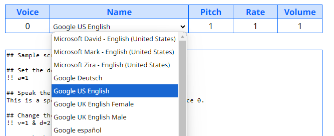

The js-tts webpage allows you to use your web browser’s built-in speech synthesis to convert text to speech without any JavaScript programming.
Use the table of voices to select your default voice. The drop-down selection allows you to choose from any of the voices available in your web browser.

You can edit the pitch, speaking rate, and volume for each voice, with the value of 1 being the default. (Some voices may not support changing the pitch or rate.)
person_add
If you want to use more than one voice for your speaking script, click the Add Voice button for each additional voice configuration that you want to add to the cast.
Enter the text you want to speak in the text area below the cast of voices, and click the Play button to convert the text to speech. Each line of text will be spoken as a separate utterance. That is, your browser will convert the first line of text to speech, speak the text, and then proceed to the next line.
play_circle stop_circle
When you click the Stop button, the browser will finish speaking the current line and then stop.
You can add comments to your speaking script using a double hash-tag, ##. When the program encounters these characters in the script, it will ignore the remainder of the line.
## Sample script ## Set the automatic delay in seconds... !! a=1 ## Speak the following text... This is a speech synthesis example, spoken by voice 0. ## Change the current voice and the delay... !! v=1 & d=2 ## Speak the following text... This example is spoken by voice 1.
Use a double exclamation mark, !!, at the beginning of a line to make directives to the program...
d directive. This delay applies only to the next line of text.!! d=2
a directive to specify an automatic delay that applies to all subsequent lines of text that do not have a custom delay...!! a=1
v directive. The voice number corresponds to the rows in your cast of voices table...!! v=1
& symbol...!! v=1 & d=2
Click the Save button to save your speaking script as a plain text file. Hold the Alt key while clicking to save your cast of voices as a JSON file.
save file_open
Click on the Open button to load a previously saved speaking script or cast file.
You can edit your cast or speaking script files manually using a text editor. The cast JSON file is formatted like this:
{"cast": [
["Google US English; David", 1, 1, 1],
["Richard; Google UK English Male", 1, 1, 1],
["Google UK English Female; Zira", 1, 1, 1],
["Linda; Mark", 1, 1, 1]
]}
The key cast is used to identify an array of voice configurations. Each voice in the array is itself an array containing four items: the voice name(s) as a string and the pitch, rate, and volume as numbers.
As the available voices are different depending on your browser and platform, you can specify multiple voices for each role, separated by semi-colons. For example, when the voice name is "Google US English; David", the program will look first for an available voice name containing the text "Google US English", and if it does not find a match it will then look for a voice name containing "David".
© 2024 by D.G. MacCarthy. Hosted on GitHub.